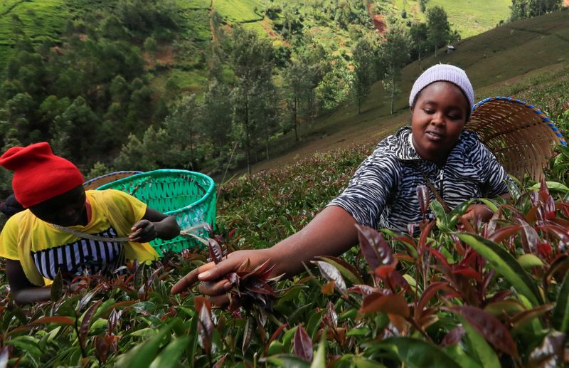

In Kenya, speciality tea finds favour with health conscious consumers
By Donna Omulo
NAIROBI (Reuters) – Bella Gwada picks purple-tipped tea leaves at a farm in central Kenya early on a Saturday morning before moving to process, brew and taste the produce which had been harvested earlier.
Gwada, who travelled 42 kilometres from Nairobi for the experience, is one of a rapidly growing base of consumers in the East African nation who are flocking to speciality teas, including purple tea, due to their health benefits.
'You don’t even need to add sugar.Its easily digestible, milder than black tea,' she said.
Kenya is the world’s biggest exporter of black tea and the crop is one of the country’s top hard currency earners, along with tourism and cash sent home by citizens living abroad.
Purple tea, which was developed by Kenyan researchers and released to farmers in 2011, is part of a slew of new varieties, which the government says have the potential to cushion farmers from oversupply of black tea and low prices.
'Purple tea is twice the price of (regular) tea,' said Karanja Kinyanjui, the owner of the farm, which has 20 acres of purple tea alongside 100 acres of the regular variety.
Unlike black tea, purple tea is not fermented in processing, and contains anthocyanin and other substances which experts say have health benefits, such as helping with weight loss.
'(It has) very strong anti-inflammatory effects,' said Samson Kamunya, director of the state-owned Kenya Tea Research Foundation.
Total production figures for speciality teas were not immediately available but the leading producer, KTDA, said in September it was setting up a specialised factory for the production of Japanese sencha green tea.
(Writing by Duncan Miriri; Editing by Ed Osmond)
Posted On: 2021-03-11T00:00:00

Content Date: 2021-03-11
Download Date: 2021-04-16
Document ID: L0C04A2OG